Bursa OSB (Merkez) ve Nilüfer OSB / NOSAB (Şube) fabrikalarımızda; 6 kW 4000×2000 mm plaka lazer kesim, Ø20–230 mm boru ve profil lazer, 220 tona varan 10 CNC/Servo abkant pres, sertifikalı kaynak, talaşlı imalat ve kataforez/toz boya süreçleriyle otomotiv ve makine sanayisine komple imalat sunuyoruz.

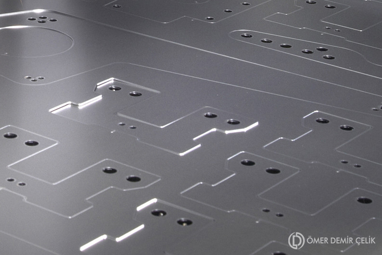
| Adet | Lazer Gücü | Tezgah Kesim Ebadı | Avantaj & Uygulama |
|---|---|---|---|
| 1 Adet | 6 kW | 2000 × 4000 mm | Ağır kalın plaka & yüksek hızlı kesim |
| 1 Adet | 4 kW | 2000 × 4000 mm | Geniş ebat sac plaka kesim |
| 5 Adet | 4 kW | 1500 × 3000 mm | Yüksek adetli seri otomotiv imalatı |
| 1 Adet | 2 kW | 1500 × 3000 mm | İnce ve orta kalınlık hassas kesim |
| 1 Adet | 1 kW | 1500 × 3000 mm | İnce sac, markalama & prototip kesim |
Kalıp maliyeti olmadan, prese göre malzeme deformasyonu yaratmadan, sac üzerine markalama/yazı yazabilme teknolojisi ve minimum fire oranıyla üretim.

9 plaka lazer + 6500 mm boru lazer ile 20 mm'ye kadar çapaksız kesim.

10 makine ve 220 tona varan büküm gücüyle kayıtlı/izlenebilir büküm.

TIG, MIG/MAG, punta ve saplama kaynak ile fikstürlü seri imalat.
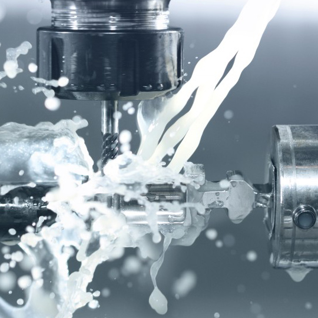
Diş açma, havşa açma, rayba ile hassas delik delme ve CNC işleme.
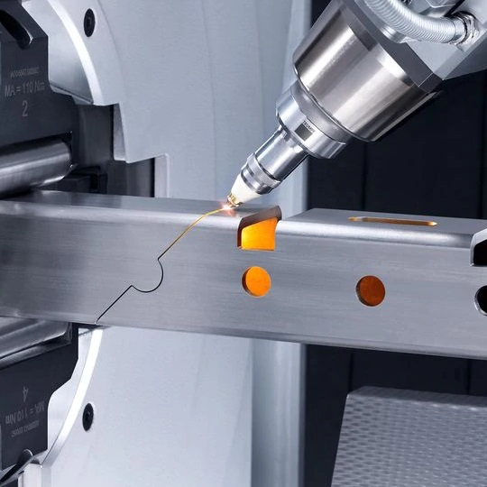
Kataforez, siyah/beyaz galvaniz ve nikelaj-krom korozyon koruma.
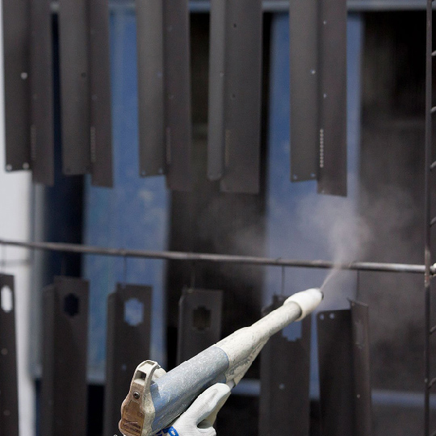
Otomotiv ve makine standartlarında elektrostatik toz ve yaş boya.
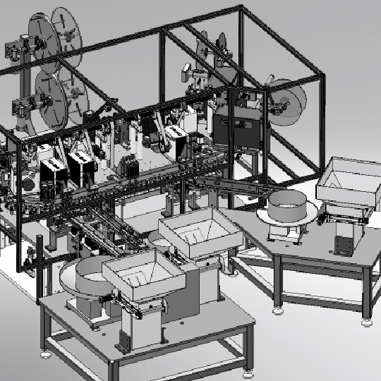
Ürününüzün tasarım aşamasından seri üretime mühendislik desteği.
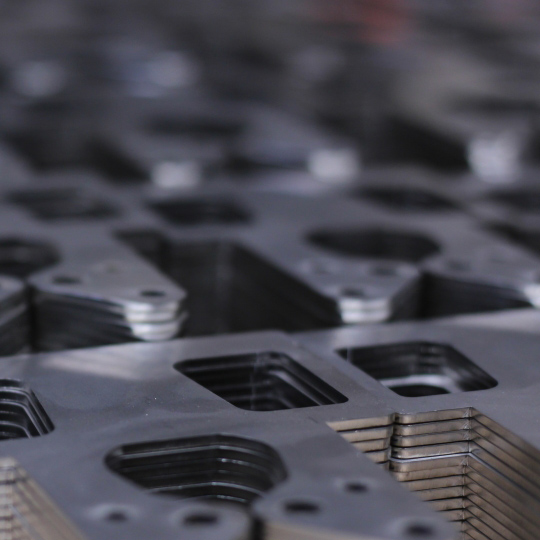
Kesim, büküm, kaynak, talaşlı imalat ve kaplama dahil bitmiş ürün teslimi.
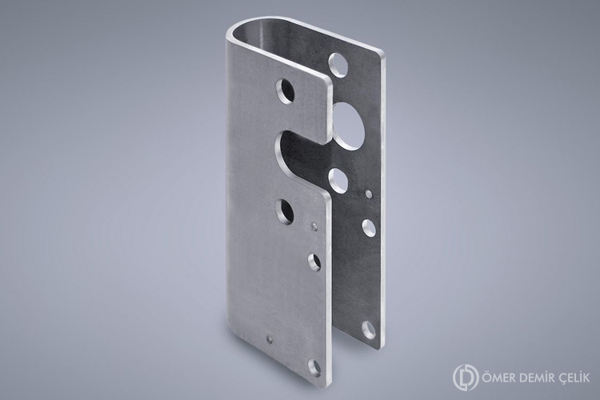
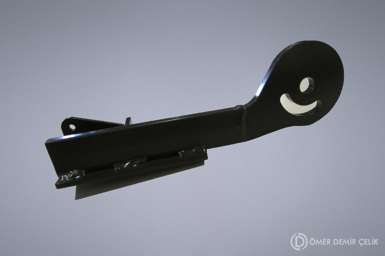
Mevcut sitenizde "Team Member 1" olarak kalan sertifikalarınız, gerçek belge isimleri ve büyütülebilir önizlemeleriyle yeniden düzenlendi.
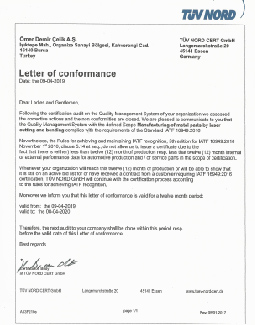
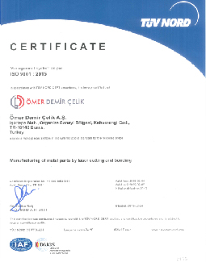
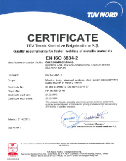
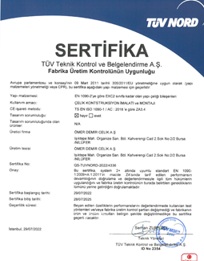
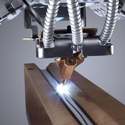
<ul class="team"> içinde alt="Team Member 1", alt="Team Member 2" ve hizmet ikonlarınız alt="Mobile First Approach" olarak hazır İngilizce şablon metinleriyle kalmıştı.
-->) Temizlendi: Mevcut sitenizin 6 farklı noktasında hatalı kapatılan HTML yorum satırları yüzünden ziyaretçilere görünen --> işaretleri ve Türkçe pencerelerdeki READ MORE butonları düzeltildi.
<a href=""><i><a href="../odc_eng/index.html"> şeklindeki hatalı iç içe HTML link yapısı düzeltilerek anlık çalışan TR / EN / DE / FR dil geçiş sistemi kuruldu.
<table width="400" border="1"> pencereleri, HTTP güvenlik uyarısı ve © 2018 ODC ibaresi 2026 HTTPS standardına taşındı.